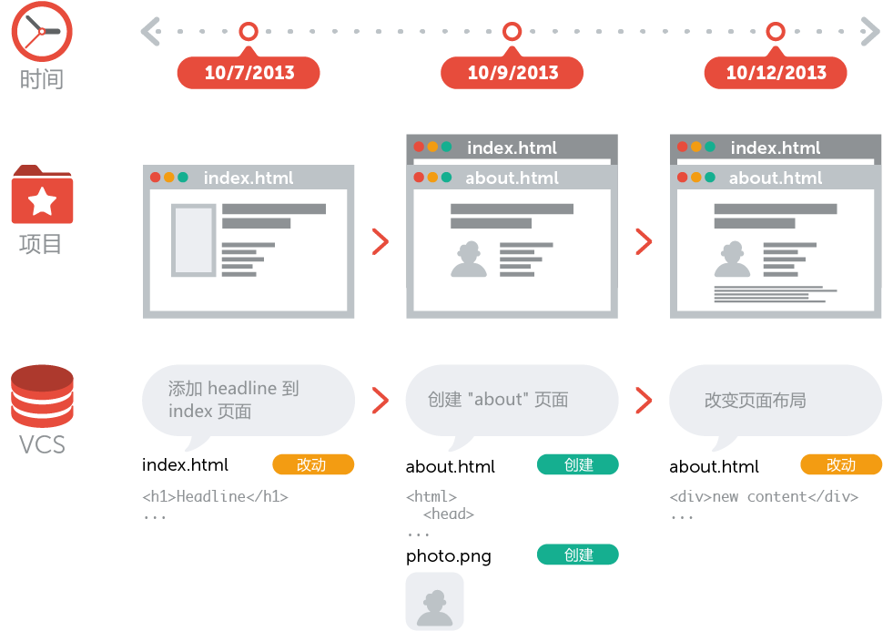
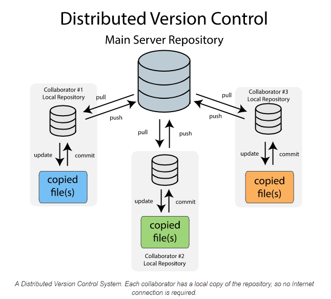
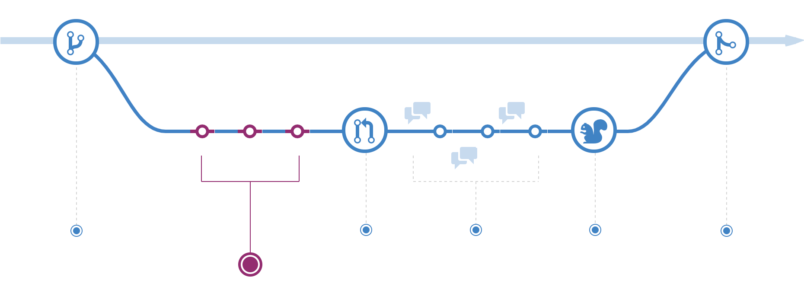
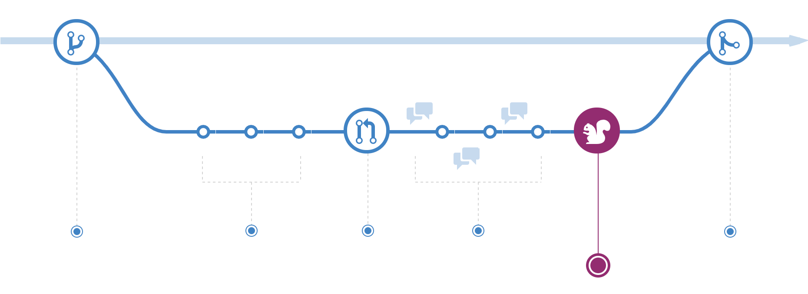

- 00 开篇词 你为什么应该学好软件工程？.md
- 01 到底应该怎样理解软件工程？.md
- 02 工程思维：把每件事都当作一个项目来推进.md
- 03 瀑布模型：像工厂流水线一样把软件开发分层化.md
- 04 瀑布模型之外，还有哪些开发模型？.md
- 05 敏捷开发到底是想解决什么问题？.md
- 06 大厂都在用哪些敏捷方法？（上）.md
- 07 大厂都在用哪些敏捷方法？（下）.md
- 08 怎样平衡软件质量与时间成本范围的关系？.md
- 09 为什么软件工程项目普遍不重视可行性分析？.md
- 10 如果你想技术转管理，先来试试管好一个项目.md
- 11 项目计划：代码未动，计划先行.md
- 12 流程和规范：红绿灯不是约束，而是用来提高效率.md
- 13 白天开会，加班写代码的节奏怎么破？.md
- 14 项目管理工具：一切管理问题，都应思考能否通过工具解决.md
- 15 风险管理：不能盲目乐观，凡事都应该有B计划.md
- 16 怎样才能写好项目文档？.md
- 17 需求分析到底要分析什么？怎么分析？.md
- 18 原型设计：如何用最小的代价完成产品特性？.md
- 19 作为程序员，你应该有产品意识.md
- 20 如何应对让人头疼的需求变更问题？.md
- 21 架构设计：普通程序员也能实现复杂系统？.md
- 22 如何为项目做好技术选型？.md
- 23 架构师：不想当架构师的程序员不是好程序员.md
- 24 技术债务：是继续修修补补凑合着用，还是推翻重来？.md
- 25 有哪些方法可以提高开发效率？.md
- 26 持续交付：如何做到随时发布新版本到生产环境？.md
- 27 软件工程师的核心竞争力是什么？（上）.md
- 28 软件工程师的核心竞争力是什么？（下）.md
- 29 自动化测试：如何把Bug杀死在摇篮里？.md
- 30 用好源代码管理工具，让你的协作更高效.md
- 31 软件测试要为产品质量负责吗？.md
- 32 软件测试：什么样的公司需要专职测试？.md
- 33 测试工具：为什么不应该通过QQ微信邮件报Bug？.md
- 34 账号密码泄露成灾，应该怎样预防？.md
- 35 版本发布：软件上线只是新的开始.md
- 36 DevOps工程师到底要做什么事情？.md
- 37 遇到线上故障，你和高手的差距在哪里？.md
- 38 日志管理：如何借助工具快速发现和定位产品问题 ？.md
- 39 项目总结：做好项目复盘，把经验变成能力.md
- 40 最佳实践：小团队如何应用软件工程？.md
- 41 为什么程序员的业余项目大多都死了？.md
- 42 反面案例：盘点那些失败的软件项目.md
- 43 以VS Code为例，看大型开源项目是如何应用软件工程的？.md
- 44 微软、谷歌、阿里巴巴等大厂是怎样应用软件工程的？.md
- 45 从软件工程的角度看微服务、云计算、人工智能这些新技术.md
- 一问一答第1期 30个软件开发常见问题解决策略.md
- 一问一答第2期 30个软件开发常见问题解决策略.md
- 一问一答第3期 18个软件开发常见问题解决策略.md
- 一问一答第4期 14个软件开发常见问题解决策略.md
- 一问一答第5期 22个软件开发常见问题解决策略.md
- 学习攻略 怎样学好软件工程？.md
- 特别放送 从软件工程的角度解读任正非的新年公开信.md
- 结束语 万事皆项目，软件工程无处不在.md
30 用好源代码管理工具，让你的协作更高效
你好，我是宝玉。在今天，源代码管理工具在软件项目中已经是标准配置了，几乎每个软件项目都会应用到，可以说是最基础的项目开发工具。选择也很多，可以自己搭建源代码管理服务，也可以直接用网上托管的服务，例如 GitHub、GitLab、BitBucket 等。
但同样是应用源代码管理工具，为什么有的团队就能做到代码质量高，随时能发布新版本，高效开发？而有的团队却不能做到高效开发，拿到的代码也不稳定，合并时冲突很多？
今天，我将带你了解一下源代码管理工具，以及如何才能应用好源代码管理工具，以保证代码质量稳定，协作高效。
源代码管理工具发展简史
源代码管理工具也叫版本控制系统，是保存文件多个版本的一种机制。每一次有人提交了修改，这个修改历史都会被版本控制系统记录下来。如下图所示，每一次对内容的修改，都会形成一个当前项目完整内容的快照。

图片来源：《什么是版本控制？》
源代码管理工具从诞生到现在已经有 40 多年的历史了，经历了四个阶段。
没有源代码管理工具的时代
早些年开发软件可没有我们这么幸运，在 1972 年之前都没有任何工具可以帮助我们做源代码管理。
这就意味着，当你开发时，必须要告知团队里的其他人，你正在对哪些文件进行编辑，好让他们不要操作相同的文件。当你花了很长时间完成你的修改后，可能这些文件早已经被团队里的其他开发成员修改或者删除了。
除了协作的问题，还有一个问题就是版本问题。没有源代码管理，你得经常性对项目的文件保存备份，很麻烦，而且还是一样有不少问题：
-
很难知道做了哪些修改，你可能需要挨个目录去查看文件修改时间；
-
对版本命名是一个很麻烦的事情，每次备份都得有一个名字；
-
很难知道两次备份之间，做了哪些修改。
本地版本管理
最早的版本控制系统是 SCCS（Source Code Control System），诞生于 1972 年，它实现了对单个文件保留多个版本，这就意味着你可以看到每一个文件的修改历史了。
后来又有了 RCS （Revision Control System），它具有更好的文件比较算法，通过登录同一台中央大型机，可以实现每个人签出自己的拷贝。
但这个阶段只能本机使用，而且一次只能修改一个文件，无法满足好多人协作的问题。
集中式版本管理
1986 年问世的 CVS（Concurrent Versions System）是第一个采用集中式的服务器来进行版本库的管理工作，所有文件和版本历史都放在服务端，每个用户通过客户端获取最新的代码，可以多个人编辑一个文件，并且能提交到服务器合并在一起。
再后来的 SVN（Subversion）则对 CVS 进行了很多优化，比如支持文件改名、移动、全局版本号等，这些优化很大部分程度上解决了 CVS 存在的一些缺陷，所以在 2000 年后逐步取代了 CVS 成为主流的源代码管理工具。

图片来源：How Version Control Systems Work
不过，这类集中式源代码管理工具，过于依赖服务器，如果服务器出问题或者连不上，就没法用了，如果服务器损坏，所有的版本历史也会丢失。
分布式版本管理
分布式版本管理工具的典型代表就是 Git，分布式版本控制系统的整个代码库的副本都可以存储在用户的本地系统上，这样文件和版本控制操作变得非常容易，离线也可以操作，如果主存储库关闭或者删除，可以很容易从本地存储库恢复。
现在 Git 已经逐步替代了 SVN、CVS 等源代码管理工具，成为最主流的源代码管理工具。
Git 的主要问题是学习成本要稍微高一点，要花点时间理解它的工作原理和记住主要的命令。

图片来源：How Version Control Systems Work
如何选择合适的源代码管理系统
现在源代码管理系统已经有很多的选择，你可以选择网上托管的代码管理服务，或者是自己搭建。
自己搭建的好处就是可以有更多的控制，但是需要有自己的服务器，自己搭建环境，还要后续的维护。用网上的托管平台，可以减少运维成本，功能也很强大，但对平台有一定的依赖。
我的建议是如果项目规模不大，隐私要求不高，完全没必要自己搭建，可以直接选择网上的托管平台。这样可以节约很多时间成本，而且还可以方便和一些第三方服务，例如持续集成等进行整合。
如果希望对源代码管理有更多控制，也能接受运行维护上的投入，就可以选择自己搭建。
自己搭建源代码管理系统
- Git
Git 本身是开源免费的，所以每个人都可以搭建自己的 Git Server，具体的操作执行我就不在此处展开了，网上有很多教程。例如：《 服务器上的 Git - 在服务器上搭建 Git 》《搭建自己的 Git 服务器》
- GitLab
Git 自带的 Server 默认是没有 Web 界面进行管理的，只能用命令行操作交互，这在操作上有很多不便利性，尤其是不方便做代码审查，所以可以安装GitLab 的社区版本，开源免费的，有 Web 操作界面，可以像 GitHub 一样提交 Pull Request，并且和 CI （持续集成）系统例如 GitLab CI、Jenkins 都有很好的集成。
网上也有很多安装教程：《在自己的服务器上部署 GitLab 社区版》《GitLab 的安装及使用教程》。
- Gerrit
Gerrit是由 Google 开发的，用于管理 Google Android 项目源代码的一个系统。它支持 Git 和代码评审。参考教程：《Gerrit 代码审核服务器搭建全过程》
网上的代码托管平台
- GitHub
GitHub现在已经是全球最流行的代码托管平台，功能强大，和第三方服务集成非常好。而且私有的代码库如果不超过 3 个人都是免费的，我自己很多个人项目就都是放在 GitHub 上托管。
GitHub的 Web UI 非常强，尤其是代码浏览和审查，在网站上就可以提交 Pull Request 和进行代码审查。不过 GitHub 不提供 CI 服务，需要和第三方 CI 服务集成。
- GitLab
GitLab的网上托管服务很多地方和 GitHub 都很类似，但是价格更便宜。例如免费用户可以支持无限的私有项目，也内置了 CI 的支持。
- Coding
Coding是国内一个不错的代码托管平台，5 人以下的私有库免费，内置了 CI 支持，同时还有项目管理工具支持。
其他的服务还有像：码云、阿里云 Code、百度效率云、腾讯 Git 代码托管、华为云 CodeHub，这里就不一一介绍了。
如何用好源代码管理工具？
用好源代码管理工具，有三个简单可行的原则：
原则一：要频繁的提交
很多开发人员不愿意轻易提交代码到源代码管理中心，喜欢“憋个大招”，本地做了大量修改，希望代码能“完美”。但这样做却没能享受到频繁提交带来的好处。
频繁提交，这意味着你每次提交的代码变更是比较少的，便于 Code Review，同时如果出现问题，也可以迅速定位或者直接回滚。
频繁地提交，也让团队成员可以及时同步最新代码，不至于在最后合并时，产生有大量的合并冲突。
频繁提交，不意味着提交不完整的内容，而是将要提交的内容分拆，并且保证完整性。
比如说，有一个涉及前后端的功能，可以拆分成前端和后端两次提交，各自有独立的代码和测试；比如说你开发新功能的时候发现有代码需要重构，那么对于重构的代码单独一次提交，不要和新功能的代码提交放一起。
原则二：每次提交后要跑自动化测试
在前面章节我们学习了自动化测试和持续集成，自动化测试是非常有效的质量保障手段，而持续集成工具，可以让每次提交代码后，能自动地运行相应的自动化测试代码，有效保障提交代码的质量。
源代码管理的第二个原则，就是每次提交，必须要运行自动化测试代码，如果测试不通过就不能合并，要对问题进行甄别和修复，确保提交的代码质量是没问题的。
原则三：提交的代码要有人审查
代码审查是自动化测试之外，一种非常行之有效的提高质量的手段，通过代码审查，可以发现代码中潜在的问题。通过代码审查，也可以加强团队的技术交流，让水平高的开发人员 Review，可以帮助提升整体代码水平；Review 高水平的代码也是一种非常有效的学习方法。
怎么做好代码审查呢？
我的经验是，在审查别人代码的时候，先了解清楚这个提交的代码要解决的是什么问题，想象一下如果是自己来写这个代码会怎么写。这样在审查的时候，就能发现一些和自己不一样的地方，别人好的地方我们可以学习，不对的地方应该指出。
对于审查出来的问题，可以分成三个类型：
-
问题：如果对代码有不清楚的地方，可以作为问题提出，进一步澄清确认；
-
建议：原来的实现没有太大问题，但是可以有不同的或者更好的实现；
-
阻塞：代码有明显问题，必须要修改。
这样对于被审查的人可以针对你的问题进行针对性修改。
这三个原则很简单，可以有效提升代码质量，减少合并冲突，及时发现问题，从而让你的协作更高效。
我该选择什么样的开发流程？
现在基于源代码管理有三种主要的开发流程：
阮一峰老师有一篇文章Git 工作流程对它们有详细介绍。在这里我重点介绍一下 GitHub flow，因为它简单易懂，另外，它也对上面我提到的三个原则有很好的支持。
当然，我并不是说你一定要选择 GitHub flow，而是在理解它后，可以基于它的流程衍生出适合自己项目特点的开发流程。
GitHub 开发流程
GitHub 开发流程的关键在于两点：
- 有一个稳定的分支，例如 master；
- 每次创建新功能或者修复 Bug，必须创建一个分支。最后通过代码审查和自动化测试后，才能合并回稳定分支。
通过这样的开发流程，就相当于把自动化测试和代码审查作为一种强制性要求了，所有的修改必须要通过代码审查和自动化测试通过才能合并，从而保证有一个可以随时部署发布的稳定分支。
我们具体看看基于 GitHub flow 是如何开发的。
第一步：创建一个分支
分支是 Git 中的核心概念，整个 GitHub 流程都是基于分支展开的，master 分支是要一直保持稳定的，不能直接在 master 上开发。
无论你是要开发一个新功能还是修复一个 Bug，第一件事永远是从 master 创建一个分支出来。

图片来源：GitHub网站截图
第二步：提交更新
当创建好分支后，就可以基于分支开始工作了，这时候就可以按照前面建议的原则，频繁的提交更新。注意每次提交的时候，要加上说明性的信息，让其他人明确知道你这次提交的内容是什么，如果开发过程中，发现错误了，还可以随时回滚之前的更改。

图片来源：GitHub网站截图
第三步：创建一个 Pull Request
在开发完成后，创建一个 Pull Request（合并请求，简称 PR，GitLab 中叫 Merge Request），创建 PR 时，通常要附上描述性的信息，关联上相应的 Ticket 连接，让其他人知道你这个 PR 要完成什么任务。创建好 PR 后，其他人就可以直观的看到你所有的修改。

图片来源：GitHub网站截图
第四步：讨论和代码审查
当你的 PR 提交后，团队的其他人就可以对 PR 中的代码修改进行评论。比如说代码风格不符合规范、缺少单元测试、或者很好没有问题。PR 的主要目的就是为了方便大家做代码审查。
根据代码审查的结果，你可能要做一些修改，那么只要继续提交更新到这个分支就可以了，提交更新后，PR 就会自动更新，其他人可以基于你的更新进一步的讨论和审查，直到通过代码审查。

图片来源：GitHub网站截图
第五步：部署测试
在合并前，还需要把分支的修改进行测试。理论上来说，需要将修改的内容部署到测试环境测试，但这样效率太低了，所以通常的做法是借助持续集成工具，在每次提交代码后，就运行自动化测试代码，自动化测试代码全部通过后，就可以认为质量是可靠的。
这也意味着你需要让项目中的自动化测试代码保持一定的测试覆盖率，否则质量还是难以保障的。

图片来源：GitHub网站截图
第六步：合并
当你的代码通过了代码审查和自动化测试，就可以将代码合并到 master 分支了。合并后，之前的分支就可以删除，但你之前所有的提交记录在 master 都可以看到，所以完全不用担心丢失历史版本记录。

图片来源：GitHub网站截图
以上就是 GitHub 开发流程的主要步骤，通过分支开发新功能或者修复 Bug，强制通过代码审查和自动化测试才能合并 master，从而保证 master 的稳定。
GitHub 开发流程的几个常见问题
基于这个流程我再补充几个常见问题：
- 怎么发布版本？
要发布版本的话，从 master 上创建一个 Tag，例如 v1.0，然后将 Tag v1.0 上的内容部署到生产环境。
- 怎么给线上版本打补丁？
如果线上发布的版本（例如 v1.0）发现 Bug，需要修复，那么基于之前的 Tag 创建一个分支（例如 hotfix-v1.0-xxx）出去，在分支上修复，然后提交 PR，代码审查和自动化测试通过后，从分支上创建一个新的 Tag （例如 v1.0.1），将新的 Tag 发布部署到生产环境，最后再把修改合并回 master。
- 如果我经常需要打补丁，有没有比 Tag 更好的办法？
每次发布后，可以创建一个发布版本的分支，例如 release-v1.0，每次打补丁，都直接从发布分支 release-v1.0 而不是 master 创建新的分支（例如 hotfix-release-v1.0-xxx），修复后提交 PR，代码审查和自动化测试通过后，合并回分支 release-v1.0，然后基于 release-v1.0 分支发布补丁。
最后将合并的 PR，借助 git 的 cherry-pick 命令再同步合并回 master。
上面的例子其实主要是说明一下，GitHub Flow 只是一种基础的开发流程，你完全可以基于 GitHub Flow，衍生出适合你自己项目特点的开发流程。
无论你基于哪一种开发流程，最好能做到这两点：
- 有一个稳定的代码分支；
- 在合并分支之前，对代码有审查，自动化测试要能通过。
这样你才能做到可以随时发布，质量稳定，高效协作。
总结
源代码管理工具也叫版本控制系统，是保存文件多个版本的一种机制，可以记录文件的历史版本。
用好源代码管理工具，有三个简单可行的原则：
-
原则一：要频繁的提交；
-
原则二：每次提交后要跑自动化测试；
-
原则三：提交的代码要有人审查。
基于源代码的开发流程，要保证好两点：
- 有一个稳定的代码分支；
- 在合并分支之前，对代码有审查，自动化测试要能通过。
用好源代码管理工具，设计好开发流程，保证好代码质量，你的协作才能更高效。